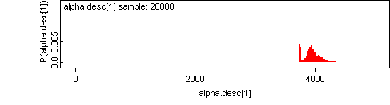
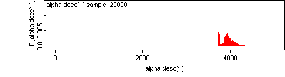

![[jama0]](jama0.bmp) Jama River Valley Ecuador -
Jama River Valley Ecuador - Radiocarbon calibration with
phase information
This example is from the book Buck CE, Cavanagh WG, & Litton CD (1996) Bayesian approach to interpreting archaeological data . Wiley: Chichester. p226-232 See also Zeidler,JA, Buck CE & Litton CD (1998) The integration of archaeological phase information and radiocarbon results from the Jama River Valley, Ecuador: a Bayesian approach. Latin American Antiquity 9 160-179 .The model was set up by Andrew Millard.
© Andrew Millard 2001
model{
for (i in 1 : nDate){
theta[i] ~ dunif(beta[phase[i]], alpha[phase[i]] )
X[i] ~ dnorm(mu[i], tau[i])
tau[i] <- 1 / pow(sigma[i], 2)
mu[i] <- interp.lin(theta[i], calBP[], C14BP[])
}
# priors on phase ordering
alpha[1] ~ dunif(beta[1], theta.max)
beta[1] ~ dunif(alpha[2], alpha[1])
alpha[2] ~ dunif(beta[2], beta[1])
beta[2] ~ dunif(alpha[3], alpha[2])
alpha[3] ~ dunif(beta[3], beta[2])
beta[3] ~ dunif(alpha[4], alpha[3])
alpha[4] ~ dunif(alpha4min, beta[3])
alpha4min <- max(beta[4], alpha[5])
beta[4] ~ dunif(beta[5], alpha[4])
alpha[5] ~ dunif(alpha5min, alpha[4])
alpha5min <- max(beta[5], alpha[6])
beta[5] ~ dunif(beta[6], beta5max)
beta5max <- min(beta[4], alpha[5])
alpha[6] ~ dunif(beta[6], alpha[5])
beta[6] ~ dunif(beta[7], beta6max)
beta6max <- min(alpha[6], beta[5])
alpha[7] <- beta[6]
beta[7] ~ dunif(theta.min,alpha[7])
for (i in 1 : 7) {
alpha.desc[i] <- 10 * round(alpha[i] / 10)
beta.desc[i] <- 10 * round(beta[i] / 10)
}
}
Data1 Data2 Radio Carbon Calibration Curve ( click to open )
Inits for chain 1 Inits for chain 2 ( click to open )
Results
![[jama1]](jama1.bmp) 
